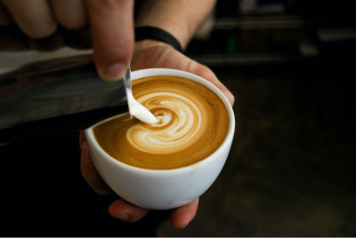

Эспрессо
Метод приготовления кофе путём прохождения горячей воды под давлением через фильтр с молотым кофе. Эспрессо пользуется большой популярностью во всём мире и, прежде всего, на юге Европы — в Италии, Испании и Португалии. Традиционно подается с одним кубиком сахара, без ложки.
Латте
Кофейный напиток родом из Италии, состоящий из молока и кофе эспрессо. Латте варится на основе молока, образуя в чашке или бокале трёхслойную смесь из молока, эспрессо и пены.

Капучино
Кофейный напиток итальянской кухни на основе эспрессо с добавлением в него подогретого вспененного молока.